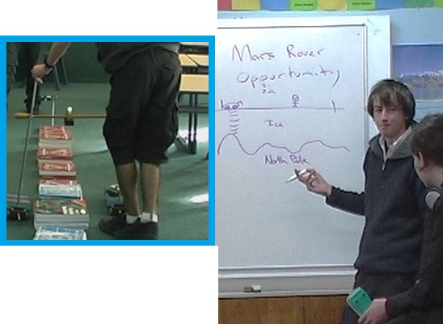

Development of Casio Calculator to Picaxe Sensor Systems
Michael Fenton came to Secondary teaching with research and industry experience. He knew that investigating how the world works requires seeing more than the eyes alone can reveal. School science equipment is limited, with expensive data loggers and sensors reserved for senior classes. After teaching Chemistry, Biology, Physics and Calculus, he wondered if he could invent a low cost system that would permit authentic hands-on data collection for cross-curricula learning in these subject.
He was using Picaxe microcontrollers with his Nexus Research Group students, so he focused on connecting a Picaxe-18 to a Casio FX-9750 graphic calculator. He invented a reliable and robust connector and interface circuit for bi-directional communication. This upgrades the Casio FX-9750 and FX-9860 graphic caclulators to robot remote control units as well as Picaxe (or Arduino) sensor data display units.
Key ideas
- Michael pioneered classroom trials for using a standard school Casio graphic calulator as a datalogger sensor system for cross-curricular learning.
- He developed a wide range of DIY home-made and low-cost sensors, many cost just a few cents. Sensors can measure range (distance), water vapour, temperature, pressure, alpha radiation, visible light, ultra violet (UV) light, infra red (IR) light, water hardness, static electric fields, mobile phone signals, angles, magnetic fields, and salinity.
- This system provided a robust low-cost tool for collecting data for use in senior high school subjects, such as Physical Education, Horticulture, Biology, Chemistry, Physics, Earth and Space Science, Calculus, and Statistics.
- Although forum discussions survive, the original concept and wider implementation of using a school-issue Casio graphic calculator as a field data logger and display tool were first published by Michael Fenton on the Nexus Research Group website (now offline). This work was presented at various national and international education conferences.
- Michael pioneered the general use of a low-cost, scalable solution to make experimental and hands-on authentic maths, science, and discovery learning accessible in resource-limited schools.
Build it
Picaxe microcontrollers are low cost. The 08M2 being small, very robust, and easily capable of communicating with the Casio graphic calculator at T9600 baud. Constructing a bi-directional cable is simple and low-cost, using two 2.5mm 3-pin plugs
'Build it ' Download Picaxe circuit and coding guide [PDF]
The Casio FX-9750G and FX-9860G series of graphic calculators all use the same 3-pin cable and communication protocol for calculator-to-calculator transfers. This means they can also send and receive data when connected to a Picaxe microcontroller or ESP development board. The cable used for this connection is the Casio SB-62, which is a 3-pin to 3-pin cable. The underlying communication is a TTL (Transistor-Transistor Logic) asynchronous serial protocol.
Warning: The Casio calculator's 3-pin port uses a 5V TTL logic level.
A picaxe running on 3xAA (4.5V) or 5V supply can be safely connected to the calculator.
3.3V devices such as ESP32 or BBC Microbit CANNOT be connected UNLESS a bidirectional logic level converter (or shifter) is used.
Test it
Students were familiar with many standard calculator functions, but learners had no experience of Casio Basic to code their own programmes. Students carried out a number of teacher-guided activities pre-tested and guaranteed to work. Temperature and range (distance) sensors were attached to the Picaxe which sent data at regular intervals to the Casio FX-9750. This built up their confidence and provided some prior knowledge before embarking on their own investigations. A typical introductory worksheet had three stages;
- Build a sensor - a ‘howto’ description for using the picaxe sensor unit and setting up the Casio FX-9750 calculator.
- Test your sensor - an activity already tested by the teacher to demonstrate the equipment has been assembled correctly and is performing as expected. With senior classes in maths or science, it was expected some sensors would need calibrating, a useful additional skill. A Calulus class was given a CSI scenario requiring a cooling curve to determine time death.
- Use your sensor - students invented their own authentic activity to replace a contrived NCEA task of little relevance or interest to them. Gamification and simulation made for much more engaging summative assessment.
When analysing the data and discussing the activities, there were plenty of opportunities for students to learn about calibrating sensors, such as the temperature and ultrasonic range finder sensors.
"'Test it' Receiving sensor data from a Picaxe sensor unit into the Casio FX-9750 as a list.
"'Test it' plotting data from a Picaxe sensor unit.
"'Test it' calibrating a temperature sensor in cooling water.
Warning: DO NOT let students test boiling water or live electrical outlets!
There is no need to calibrate temperature sensors using boiling water. Where in the real world would a student expect to record that temperature? For some reason teachers default to using ice and boiling water to calibrate sensors. If you are investigating cooling curves, YOU should safely get sensor readings at 100 °C and PROVIDE THIS to learners.
Use it
Authentic cross-curricula learning at school and home
The Calculus students trialing this tool were preparing for an external summative assessment on the topic of “Integrate functions and use integrals to solve problems”. This includes using Simpson’s rule. Demonstrating the required skills through a student-led case-based inquiry raised their curiosity, their interest, and their own expectations for what a successful outcome should look like. It was more than just maths. Collecting real data was exciting; they were engineers prototyping a space vehicle and its sensors for a mission to Mars. The real-world data collected had off-world conseqences for them. Important soft skills such as perserverance and creativity were shown, enabling all students to reach the extended abstract level on the SOLO taxonomy (Hattie and Brown, 2004). Many concepts in senior Physics were part of discussions. Students also used the f-word. They reported they had fun!
Download research report and class use [PDF]
Making low cost DIY home-made sensors
Since the early 2000's Michael has developed a number of sensors; some are shown on his YouTube channel. Some sensors are very simple single component sensors costing a few cents. Other sensors are inexpensive but include a power source and a few more components. Apart from the straightforward voltage, current and resistance measurements, the multi-meters can also detect; visible light, infra-red light, ultra-violet light, ionising radiation such as alpha particles, temperature, angle, bend, salt, humidity, pressure, touch, paper thickness, mobile phone transmissions, static electric fields, and more.
All of these sensors can be connected to a Casio graphic calculator using a low-cost ($6) Picaxe microcontroller.
Warning: DO NOT let students test boiling water or live electrical outlets!
Always remind learners that scientists work carefully and safely, no matter what they see in movies or TV!
YouTube videos
Michael has documented many of his do-it-yourself, low-cost sensors and science equipment in YouTube videos. Casi was a Picaxe controlled tracked robot that was driven remotely using a Casio FX-9750 graphic calculator connected to a Picaxe 08M2 interface unit. Casi, sadly, no longer exists.